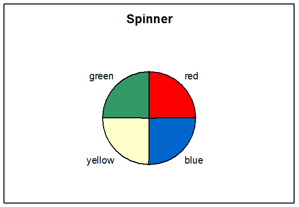
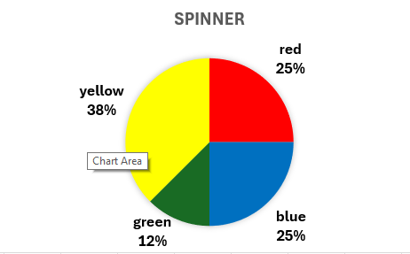
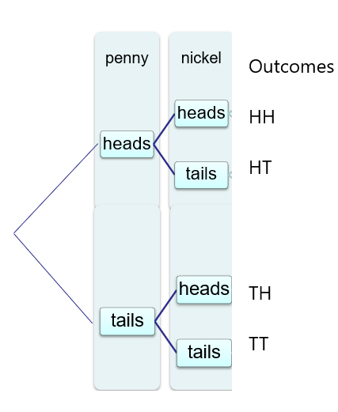
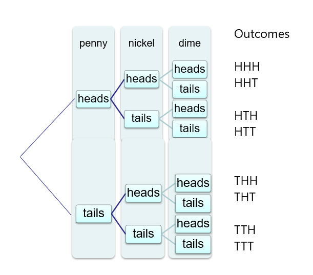
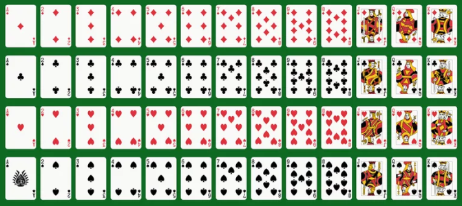

Compare experimental probabilty with theoretical probabilty.
In this chapter we will learn a little about probability. Many people are familiar with probability from playing games of chance, such as flipping coins, rolling dice and playing cards. We will use several of these examples to help explain the rules of probability.
The questions that probability can help with are your chances that the car you are buying will need more maintenance, your chances of passing a class, your chances of winning the lottery, your chances of being in a car accident. The chance of winning the lottery is very small, yet many people will spend the money on lottery tickets. Yet, if instead they saved the money that they spend on the lottery, they would have more money. In general, events that have a low probability (under 5%) are unlikely to occur. Whereas if an event has a high probability of happening (over 80%), then there is a good chance that the event will happen.
First let us review some definitions to help us understand probability.
Experiment is an activity that has specific results that can occur, but the result is unknown before you begin. Such as flipping a coin.
The outcomes are the results of an experiment. The outcomes from flipping a coin is head or tail.
An event is a set of certain outcomes of an experiment that you want to have happen. So if I want to know the likelihood of getting heads, getting heads is the event I want to happen.
The sample space is the collection of all possible outcomes of the experiment. For a single coin toss the sample space is the same as heads or tails. But if I toss two coins, say a penny and nickel, then the sample space includes all possible outcomes: head on penny and head on nickel, head on penny but tail on nickel, tail on penny with head on nickel, or tails on both penny and nickel. Now there are four outcomes in the sample space. A tree diagrams helps us see all these outcomes.
Checkpoint4.1.1.Outcomes.
Suppose that the experiment is rolling a single die. List the outcomes and sample space.
Solution.
The outcomes are the die number 1, 2, 3, 4, 5, 6. The sample space is the set {1, 2, 3, 4, 5, 6}.
To determine the likelihood of flipping heads, we need to perform the experiment. Suppose you toss a coin 10 times and heads landed up 4 times. Based on this experiment, the probability of getting heads is 4 out of 10 tries or 4/10 = 2/5 =.40 or 40%. Probabilities can be written as decimals, fractions, or percentages. Suppose you toss the coin 1000 times and heads occurred 513 times. Thus the probability of heads is now 513/100 = 51.3% of the time. This is an example of experimental probability since the value was found by actually doing the experiment.
The approximate probability of an event A, written as , is
\begin{equation*}
P(A) = \frac{\text{Number of outcomes for event A}} {\text{Total number of outcomes in sample space}}
\end{equation*}
Most likely you know that the probability of flipping a heads is ½ since there are two sides to the coin. This illustrates theoretical probability which is based on the sample space. But it assumes that all outcomes are equally likely to occur.
Consider the experiment of spinning the spinner below. There are four possible outcomes: red, blue, green, and yellow. We will expect the color blue to be spun about ¼ of the time if we spin it many times. The probability is indicated by writing P(blue) = ¼.

Figure4.1.2.Spinner with equal outcomes
Since each color represents the same fraction of the circle, we refer to them being equally likely to occur since the probability is the same. Just as rolling any number on a fair die is also equally likely at 1/6 since there are six sides.

Figure4.1.3.Spinner with unequal outcomes
Checkpoint4.1.4.Spinner Probabilities.
Find the following probabilities for the spinner above.
a. Probability of spinning red
b. Probability of spinning yellow
c. Probability of spinning green
Solution.
a. P(red)=25%, b. P(yellow) = 38%, and c. P(green) = 13%
Checkpoint4.1.5.More likely.
Which color is most likely to occur on the spinner? Why.
Solution.
P(yellow) = 38%, thus yellow is most likely to occur since it has the highest probability
Checkpoint4.1.6.Spinner Probabilities.
Find the following probabilities for the spinner above.
a. Probability of spinning red or blue
b. Probability of spinning yellow or green
Solution.
P(red or blue) = 50% since this represents half the circle
P(yellow or green) = 38+12 = 50%
Checkpoint4.1.7.Marbles.
Find the probability of selecting a green marble on one draw from a box containing five green marbles and seven blue marbles.
Solution.
Since there are 5 green marbles and a total of 12 marbles in the box, the probability is P(green)=5/12.
There are several rules regarding the possible values in probability. The probability of an event A is any number between and including 0 and 1, when written as decimals. If an event cannot occur the probability is 0, since no chance of it occurring. While an event that is certain to occur the probability is 1, which is 100%.
For example, when rolling a fair six-sided die, the probability of each event is 1/6 = 0.167 since the sample space is the set {1, 2, 3, 4, 5, 6}. The probability of rolling an 8 on this die would be 0 since it is not in the sample space. The sum of the probabilities of the outcomes in the sample space is 1, which represents 100% of the events.
Checkpoint4.1.8.Probability Rules.
Find the following probabilities using these rules .
a. Drawing a red marble from a bag containing three red and two blue marbles.
b. Drawing a green marble from a bag containing only green marbles.
c. Drawing a black marble from a bag containing only blue marbles.
Solution.
a. P(red) = 3/5 = 0.60 = 60% since 3 of the 5 marbles are red.
b. P(green) = 1 or 100% since all the marbles are green.
c. P(black) = 0 since black is not in the sample space of only blue marbles
Suppose you want to know the probability that an event will not occur, this uses the complement of the event. When we roll a die, we know that sample space consists of the outcomes 1, 2, 3, 4, 5, 6. The probability of rolling a 3 is \(P(3)=1/6\text{.}\) The probability of not rolling a 3 is \(P(not 3) = 5/6 \) since there are 5 outcomes that are not a 3. Since the sum of the outcomes in the sample space is 1 or 100%, we can find the complement by subtracting the probability of the event from 1.
The complement of an event E is the set of outcomes in the sample space that are notincluded in the outcomes of the event E. The complement of E is\(P( E^c) = 1 – P(E)\) .
Checkpoint4.1.9.Complement.
Find the complement of rolling an even number on a fair six-sided die.
Solution.
P(even) = 3/6=0.5 for the event of 2, 4, 6. So the complement will be not even (thus odd numbers) therefore P(not even) = 1-0.5 = 0.5 which are the events 1, 3, 5.
Checkpoint4.1.10.Complement.
Find the complement of drawing a red marble from a bag containing 3 red marbles and 5 blue marbles.
Solution.
P(red)=3/8=0.375 thus the complement is P(not red) \(=1-.375 =0.628 \) which is the same as the 5/8 that are blue in the bag.
So far we have focused on simple events where we focus on just one outcome. When we found the probability of getting an even number on a dice roll, we are working with compound events since there are three outcomes we are considering. This can be extended to multiple experiments – such as tossing two coins or rolling two dice. This will increase our sample space.
We can use tree diagrams to help us find the sample space from compound events. A tree diagram is a device consisting of line segments branching from a starting point and from each outcome for each event. We read across the rows to find all possible outcomes for the sample space.
Lets find the sample space for tossing two coins, say a penny and nickel. If we toss the penny first, we have two outcomes of heads or tails. So we choose a starting point and draw two lines to represent the two outcomes and list them. When we toss the nickel, we also have two outcomes. So we draw two lines from EACH of the previous outcomes to represent the second event and list the outcomes. As we read along the tree diagram, we have the sample space that includes all possible outcomes: head on penny and head on nickel, head on penny but tail on nickel, tail on penny with head on nickel, or tails on both penny and nickel. Now there are four outcomes in the sample space.

Figure4.1.11.Tree diagram for two coin tosses
With the four outcomes, which are equally likely to happen due to the fair coins, the probability is ¼ for each. The probability of getting at least one head on either of the tosses is ¾ since three of the four outcomes have a head. The probability of getting exactly one head on either toss is ½ for head-tail or tail-head.
Tree diagrams can be used for multiple events. Suppose you flip a penny, nickel and dime. Make a tree diagram to list all possible outcomes. Hint: from your previous tree diagram, draw two lines from each previous branch to represent the outcomes for the dime.
Checkpoint4.1.12.Tree Diagram.
Make a tree diagram to list all possible outcomes for tossing three fair coins.
Solution.
There are eight outcomes as shown below.

Figure4.1.13.Tree diagram for three coin tosses
Checkpoint4.1.14.Probabilities from tree diagram.
Find the following probabilities using your tree diagram for three coins.
a. getting three heads
b. getting at least two heads
c. getting exactly two tails
d. getting four tails
Solution.
a. P( three heads) = 1/8
b. P(at least two heads) = 4/8 = ½
c. P(exactly two tails) = 3/8
d. P(four tails) = 0 since not in sample space
Next, let us look at the standard deck of playing cards. There are four suits: diamonds, clubs, hearts, and spades. Half the cards are red and half are back. The are 13 numbered cards for each suit consisting of two thru ten, an ace, and the face cards as jack, queen, and king. This makes the standard deck of 52 cards.

Figure4.1.15.Standard deck of cards
Checkpoint4.1.16.Sample Space.
How many outcomes are in the sample space for a standard deck of cards?
Solution.
There are 52 outcomes in a standard deck. Each card represents an outcome.
Checkpoint4.1.17.Spades.
What is the probability of getting a spade drawing one card randomly from a deck?
Solution.
There are 13 spades in a deck of 52 cards, thus P(spade)=13/52=1/4 .
Checkpoint4.1.18.Jack.
What is the probability of getting a Jack drawing one card randomly from a deck?
Solution.
There are 4 jacks in a deck of 52 cards, thus P(jack)=4/52=1/13=0.077
Checkpoint4.1.19.Complement.
What is the probability of not getting an Ace by drawing one card randomly from a deck?
Suppose in a sample of 50 people the following blood types were recorded: 19 Type O, 22 Type A, 6 Type B, and 3 Type AB. Find the probability of getting the specified blood type if one person is selected at random from this sample.
a. Type A blood.
b. Type O or Type B.
c. Not type AB.
Solution.
a. P(A)=22/50
b. P(O or B) = 19/50 + 6/50 = 25/50
c. P(not AB) = 1-3/50 = 47/50 is the complement
Checkpoint4.1.21.Rain.
Suppose the weather person predicted the probability of it raining today is 0.45. What is the probability of it not raining?
Solution.
Since not raining is the complement of raining, then P(not rain) = 1-P(rain) = 1-.45=0.55
Checkpoint4.1.22.COVID.
Moderna estimated the effectiveness of the COVID19 vaccine at 95% for preventing COVID. What was the probability of getting COVID if you had the vaccine?
Solution.
Using the complement, P(COVID) = 1-P(vaccine)=1-.95=0.05